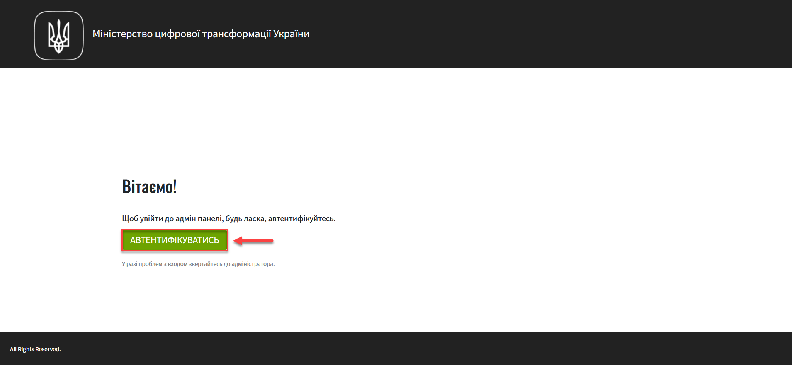

Setting up the registry components backup schedule and retention time
1. General description
The platform provides the ability to manage the schedule for creating backup copies of registry components and the time span for storing such copies in the backup repository.
Backup copies of components are created using the velero tool and stored in a secure minio backup repository located outside the Platform cluster.
|
The backup schedule is configured in the unix-cron format on the Control Plane administrative panel interface. The retention period for backup copies must be greater than or equal to one unit, be a whole number, and not contain special characters. |
The values are stored in the registry configuration deploy-templates/values.yaml file.
The corresponding parameters are applied through the Create-registry-backup-<registry-name> Jenkins pipeline.
2. Setting up a schedule
-
Log in to the Control Plane console as the Registry administrator.

-
Go to the Registries section and select the required one.
-
Click the
Editbutton located in the upper right corner.You can also set up a backup schedule and retention time while creating a registry. However, it is not mandatory. -
Go to the Backup section. Here you can set the schedule for creating backup copies and the retention period. Turn the toggle on and configure the schedule for creating automatic backup copies.
By default, the Set automatic backup copy toggle is turned off for new registries. The backup schedule is configured in the unix-cron format and is defined based on Kyiv time.
By default, the
Europe/Kievtime zone is set in the values.yaml configuration and at the Jenkins pod level as an environment variable.The offset of +2 hours (
UTC+2) in winter and +3 hours (UTC+3) in summer is taken into account.Use the https://crontab.guru/ resource, a simple and convenient cron expression editor, to better understand the logic of schedule settings.
-
In the
Schedulefield, enter, for example, the following value:5 11 * * MON-FRI. Use a space as a separator.This means that a backup copy for the registry environment will be created every day from Monday to Friday at 10:05 according to Kyiv time.
After entering the backup schedule, a hint appears on the interface showing the time of the next 3 backup creation runs. -
In the
Retention time (days)field, enter, for example, the following value:5. This means that the backup will be stored in the repository for 5 days.The value can only be a positive number and should not be set to less than 1 day. It is recommended to set the retention time longer than the period between creating copies.
-
-
Click CONFIRM to save the changes.
As a result, a request for update with the status
Newwill be generated. -
Go back to the
Registriessection, scroll down the page, and find theRequests for updatesection. -
Open the generated request by clicking the view icon — 👁.
The proposed changes will be applied to the deploy-templates/values.yaml configuration file upon confirmation. -
In the new window, compare the two versions of the changes, make sure the data you entered is correct, and click Confirm. You can also reject the changes to the configuration immediately by clicking Reject.
The comparison window allows you to conveniently check the two versions of the changes: the current one (on the left) and the new one (on the right). 
As a result, the request will change the state to
confirmed. At the specified time, theCreate-registry-backup-<registry-name>Jenkins pipeline will be triggered. It applies the parameters of the specified configuration and creates backups in the backup repository. -
Wait until the code build is completed. This may take a few minutes.
3. Checking the created backups
At the specified date and time, backups should be created according to the schedule specified in the configuration (see --Setting up a schedule)
- You can check this as follows:
-
-
In the registry information, open the Registry components section and navigate to Jenkins.
-
Go to the folder with the corresponding registry and select the
Create-registry-backup-<registry-name>pipeline. If the pipeline is highlighted in green, the build can be considered successful. -
Open the build details.
-
Go to the console output (
Console Output) to view the technical log of the pipeline execution. -
Scroll down the page and make sure that the registry backup has been created.
Example 1. Console Output. Successful creation of registry backup[INFO] Velero backup - external-1-2023-02-17-17-07-36 done with Completed status
This expression indicates that a backup has been created for the registry with a specific name (here -
external-1), the date and time of backup creation, and the successful completion status.
After the retention period expires, the backup system deletes outdated backup copies. -